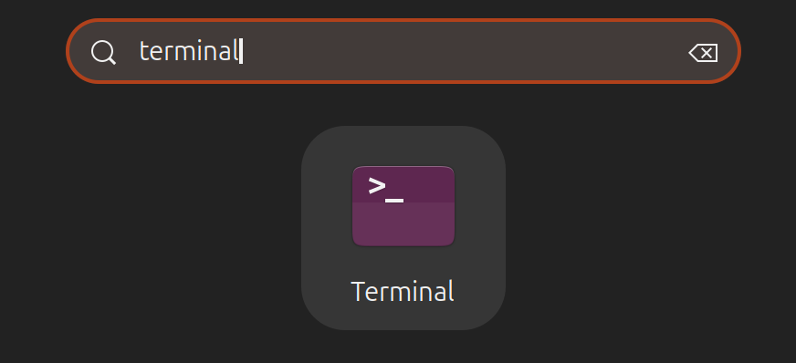
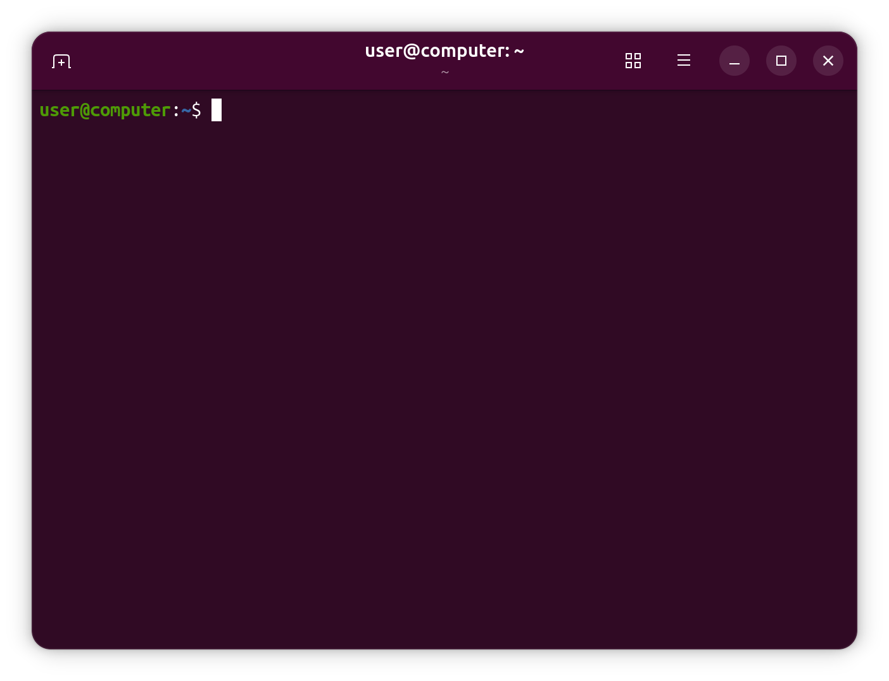

The Linux command line for beginners¶
The Linux command line is a text interface to your computer. Often referred to as the shell, terminal, console, prompt or various other names, it can give the appearance of being complex and confusing to use. Yet the ability to copy and paste commands from a website, combined with the power and flexibility the command line offers, means that using it may be essential when trying to follow instructions online, including many on this very website.
Let’s walk through some practical exercises to become familiar with a few basic commands and concepts. We’ll assume no prior knowledge, but by the end we hope you’ll feel a bit more comfortable the next time you’re faced with some instructions that begin “Open a terminal”.
What we’ll explore
How to access the command line from your own computer
How to perform some basic file manipulation
A few other useful commands
How to chain commands together to make more powerful tools
The best way to use administrator powers
For a brief history lesson, go to Why we use the terminal on Linux.
What you’ll need
A computer running Ubuntu or some other version of Linux
Every Linux system includes a command line of one sort or another. This tutorial includes some specific steps for Ubuntu Desktop but most of the content should work regardless of your Linux distribution.
Opening a terminal¶
On an Ubuntu Desktop system, you can find a launcher for the terminal by clicking on the activities button in the upper left corner of the screen, then typing the first few letters of “terminal”, “command”, “prompt” or “shell”. Yes, the developers have set up the launcher with all the most common synonyms, so you should have no problems finding it.

Other versions of Linux, or other flavors of Ubuntu, will usually have a terminal launcher located in the same place as your other application launchers. It might be hidden away in a submenu or you might have to search for it from within your launcher, but it’s likely to be there somewhere.
If you can’t find a launcher, or if you just want a faster way to bring up the terminal, most Linux systems use the same default keyboard shortcut to start it: Ctrl-Alt-T.
However you launch your terminal, you should end up with a rather dull looking window with an odd bit of text at the top, much like the image below. Depending on your Linux system the colors may not be the same, and the text will likely say something different, but the general layout of a window with a large (mostly empty) text area should be similar.

Let’s run our first command. Click the mouse into the window to make sure that’s where your keystrokes will go, then type the pwd command, all in lower case. Press the Enter or Return key to run it.
user@computer:~$ You should see a directory path printed out (probably something like /home/YOUR_USERNAME), then another copy of that odd bit of text:
user@computer:~$ /home/user
user@computer:~$ ▮There are a couple of basics to understand here, before we get into the detail of what the command actually did. First is that when you type a command it appears on the same line as the odd text. That text is there to tell you the computer is ready to accept a command, it’s the computer’s way of prompting you. In fact it’s usually referred to as the prompt, and you might sometimes see instructions that say “bring up a prompt”, “open a command prompt”, “at the bash prompt” or similar. They’re all just different ways of asking you to open a terminal.
The terminal is sometimes called the shell. In fact, when you look at the terminal window, you can see two different programs running at the same time. One is the graphical window with buttons and menus. The other one is what produces the text inside the window. This is called the shell. It understands your commands, performs all the actions and replies back to you with the result.
On the subject of synonyms, another way of looking at the prompt is to say that there’s a line in the terminal into which you type commands. A command line, if you will. Again, if you see mention of “command line”, including in the title of this very tutorial, it’s just another way of talking about a shell running in a terminal.
The second thing to understand is that when you run a command, any output it produces will usually be printed directly in the terminal, then you’ll be shown another prompt once it’s finished. Some commands can output a lot of text, others will operate silently and won’t output anything at all. Don’t be alarmed if you run a command and another prompt immediately appears, as that usually means the command succeeded. In the 1970s, early programmers decided that if everything went okay, they may as well save a few precious bytes of data transfer on their slow networks by not saying anything at all.
The importance of case
Be extra careful with case when typing in the command line. Typing PWD instead of pwd will produce an error, but sometimes the wrong case can result in a command appearing to run, but not doing what you expected. We’ll look at case a little more on the next page but, for now, just make sure to type all the following lines in exactly the case that’s shown.
A sense of location¶
Now to the command itself. pwd is an abbreviation of ‘print working directory’. All it does is print out the shell’s current working directory. But what’s a working directory?
One important concept to understand is that the shell has a notion of a default location in which any file operations will take place. This is its working directory. If you try to create new files or directories, view existing files, or even delete them, the shell will assume you’re looking for them in the current working directory unless you take steps to specify otherwise. So it’s quite important to keep an idea of what directory the shell is “in” at any given time, after all, deleting files from the wrong directory could be disastrous. If you’re ever in any doubt, the pwd command will tell you exactly what the current working directory is.
You can change the working directory using the cd command, an abbreviation for ‘change directory’. Try typing the following:
user@computer:~$ user@computer:/$ /
备注
The directory separator is a forward slash (/), not the backslash that you may be used to from Windows or DOS systems (\).
Now your working directory is /. If you’re coming from a Windows background you’re probably used to each drive having its own letter, with your main hard drive typically being C:. Unix-like systems don’t split up the drives like that. Instead they have a single unified file system, and individual drives can be attached (“mounted”) to whatever location in the file system makes most sense. The / directory, often referred to as the root directory, is the base of that unified file system. From there everything else branches out to form a tree of directories and subdirectories.
Too many roots
Although the / directory is sometimes referred to as the root directory, the word “root” has another meaning. root is also the name that has been used for the superuser since the early days of Unix.
The superuser, as the name suggests, has more powers than a normal user, so can easily wreak havoc with a badly typed command. We’ll look at the superuser account more in The command line and the superuser.
For now you only have to know that the word “root” has multiple meanings in the Linux world, so context is important.
From the root directory, the following command will move you into the “home” directory (which is an immediate subdirectory of /):
user@computer:/$ user@computer:/home$ /home
To go up to the parent directory, in this case back to /, use the special syntax of two dots (..) when changing directory. Note the space between cd and ..: unlike in DOS, you can’t just type cd.. as one command.
user@computer:/home$ user@computer:/$ /
Typing cd on its own is a quick shortcut to get back to your home directory:
user@computer:/$ user@computer:~$ /home/user
You can also use .. more than once if you have to move up through multiple levels of parent directories:
user@computer:~$ user@computer:/$ /
Notice that in the previous example we described a route to take through the directories. The path we used means “starting from the working directory, move to the parent, and from that new location, move to the parent again”. So if we wanted to go straight from our home directory to the etc directory (which is directly inside the root of the file system), we could use this approach:
user@computer:/$ user@computer:~$ /home/user
user@computer:~$ user@computer:/etc$ /etc
Relative and absolute paths¶
Most of the examples we’ve looked at so far use relative paths. That is, the place you end up at depends on your current working directory. Consider trying to cd into the etc folder. If you’re already in the root directory that will work fine:
user@computer:~$ user@computer:/$ user@computer:/etc$ etc
But what if you’re in your home directory?
user@computer:/etc$ user@computer:/etc$ /home/user
user@computer:~$ bash: cd: etc: No such file or directory
You’ll see an error. Changing directory by specifying the directory name, or using .. will have different effects depending on where you start from. The path only makes sense relative to your working directory.
But we have seen two commands that are absolute. No matter what your current working directory is, they’ll have the same effect. The first is when you run cd on its own to go straight to your home directory. The second is when you used cd / to switch to the root directory. In fact any path that starts with a forward slash is an absolute path. You can think of it as saying “switch to the root directory, then follow the route from there”. That gives us a much easier way to switch to the etc directory, no matter where we currently are in the file system:
user@computer:~$ user@computer:/etc$ /etc
It also gives us another way to get back to your home directory, and even to the folders within it. Suppose you want to go straight to your Desktop folder from anywhere on the disk (note the upper-case D). In the following command you’ll need to replace user with your own username. The whoami command will remind you of your username, in case you’re not sure:
user@computer:/etc$ user
Now go to your Desktop directory using the absolute path:
user@computer:/etc$ 备注
If your system language isn’t English, this directory also gets translated. For example, on a French system, you may want to go to /home/user/Bureau instead.
user@computer:/home/user/Desktop$ /home/user/Desktop
There’s one other handy shortcut which works as an absolute path. As you’ve seen, using / at the start of your path means “starting from the root directory”. Using the tilde character (~) at the start of your path similarly means “starting from my home directory”.
user@computer:/home/user/Desktop$ user@computer:~$ /home/user
user@computer:~$ user@computer:~/Desktop$ /home/user/Desktop
Now that odd text in the prompt might make a bit of sense. Have you noticed it changing as you move around the file system? On a Ubuntu system it shows your username, your computer’s network name and the current working directory. But if you’re somewhere inside your home directory, it will use ~ as an abbreviation. Let’s wander around the file system a little, and keep an eye on the prompt as you do so:
user@computer:~/Desktop$ user@computer:~$ user@computer:/$ user@computer:~/Desktop$ user@computer:/etc$ user@computer:/var/log$ user@computer:/var$ You must be bored with just moving around the file system by now, but a good understanding of absolute and relative paths will be invaluable as we move on to create some new folders and files!
Creating folders and files¶
In this section we’re going to create some real files to work with. To avoid accidentally trampling over any of your real files, we’re going to start by creating a new directory, well away from your home folder, which will serve as a safer environment in which to experiment:
user@computer:~$ user@computer:~$ Notice the use of an absolute path, to make sure that we create the tutorial directory inside /tmp. Without the forward slash at the start the mkdir command would try to find a tmp directory inside the current working directory, then try to create a tutorial directory inside that. If it couldn’t find a tmp directory the command would fail.
In case you hadn’t guessed, mkdir is short for ‘make directory’. Now that we’re safely inside our test area (double check with pwd if you’re not certain), let’s create a few subdirectories:
user@computer:/tmp/tutorial$ There’s something a little different about that command. So far we’ve only seen commands that work on their own (cd, pwd) or that have a single item afterwards (cd /, cd ~/Desktop). But this time we’ve added three things after the mkdir command. Those things are referred to as parameters or arguments, and different commands can accept different numbers of arguments. The mkdir command expects at least one argument, whereas the cd command can work with zero or one, but no more. See what happens when you try to pass the wrong number of parameters to a command:
user@computer:/tmp/tutorial$ mkdir: missing operand
Try 'mkdir --help' for more information.
user@computer:/tmp/tutorial$ bash: cd: too many arguments
Back to our new directories. The command above will have created three new subdirectories inside our folder. Let’s take a look at them with the ls (list) command:
user@computer:/tmp/tutorial$ dir1 dir2 dir3
Notice that mkdir created all the folders in one directory. It didn’t create dir3 inside dir2 inside dir1, or any other nested structure. But sometimes it’s handy to be able to do exactly that, and mkdir does have a way:
user@computer:/tmp/tutorial$ user@computer:/tmp/tutorial$ dir1 dir2 dir3 dir4
This time you’ll see that only dir4 has been added to the list, because dir5 is inside it, and dir6 is inside that. Later, we’ll install a useful tool to visualize the structure, but you’ve already got enough knowledge to confirm it:
user@computer:/tmp/tutorial$ user@computer:/tmp/tutorial/dir4$ dir5
user@computer:/tmp/tutorial/dir4$ user@computer:/tmp/tutorial/dir4/dir5$ dir6
user@computer:/tmp/tutorial/dir4/dir5$ The -p that we used is called an option or a switch (in this case it means “create the parent directories, too”). Options are used to modify the way in which a command operates, allowing a single command to behave in a variety of different ways. Unfortunately, due to quirks of history and human nature, options can take different forms in different commands. You’ll often see them as single characters preceded by a hyphen (as in this case), or as longer words preceded by two hyphens. The single character form allows for multiple options to be combined, though not all commands will accept that. And to confuse matters further, some commands don’t clearly identify their options at all, whether or not something is an option is dictated purely by the order of the arguments! You don’t need to worry about all the possibilities, just know that options exist and they can take several different forms. For example the following all mean exactly the same thing. Don’t type these in, they’re just here for demonstrative purposes:
user@computer:/tmp/tutorial$ user@computer:/tmp/tutorial$ user@computer:/tmp/tutorial$ user@computer:/tmp/tutorial$ Now we know how to create multiple directories just by passing them as separate arguments to the mkdir command. But suppose we want to create a directory with a space in the name? Let’s give it a go:
user@computer:/tmp/tutorial$ user@computer:/tmp/tutorial$ another dir1 dir2 dir3 dir4 folder
You probably didn’t even need to type that one in to guess what would happen: two new folders, one called another and the other called folder. If you want to work with spaces in directory or file names, you need to escape them. Don’t worry, nobody’s breaking out of prison; escaping is a computing term that refers to using special codes to tell the computer to treat particular characters differently to normal. Enter the following commands to try out different ways to create folders with spaces in the name:
user@computer:/tmp/tutorial$ user@computer:/tmp/tutorial$ user@computer:/tmp/tutorial$ user@computer:/tmp/tutorial$ user@computer:/tmp/tutorial$ user@computer:/tmp/tutorial$ another dir2 dir4 'folder 1' 'folder 3' 'folder 5'
dir1 dir3 folder 'folder 2' 'folder 4' 'folder 6'
Although the command line can be used to work with files and folders with spaces in their names, the need to escape them with quote marks or backslashes makes things a little more difficult. You can often tell a person who uses the command line a lot just from their file names: they’ll tend to stick to letters and numbers, and use underscores (_) or hyphens (-) instead of spaces.
Creating files using redirection¶
Our demonstration folder is starting to look rather full of directories, but is somewhat lacking in files. Let’s remedy that by redirecting the output from a command so that, instead of being printed to the screen, it ends up in a new file. First, remind yourself what the ls command is currently showing:
user@computer:/tmp/tutorial$ another dir2 dir4 'folder 1' 'folder 3' 'folder 5'
dir1 dir3 folder 'folder 2' 'folder 4' 'folder 6'
Suppose we wanted to capture the output of that command as a text file that we can look at or manipulate further. All we need to do is to add the greater-than character (>) to the end of our command line, followed by the name of the file to write to:
user@computer:/tmp/tutorial$ This time there’s nothing printed to the screen, because the output is being redirected to our file instead. If you just run ls on its own you should see that the output.txt file has been created. We can use the cat command to look at its content:
user@computer:/tmp/tutorial$ another
dir1
dir2
dir3
dir4
folder
folder 1
folder 2
folder 3
folder 4
folder 5
folder 6
output.txt
Okay, so it’s not exactly what was displayed on the screen previously, but it contains all the same data, and it’s in a more useful format for further processing.
Cancelling a command¶
If you make a mistake in the command and run cat with no arguments, you might catch yourself in a little trap:
user@computer:/tmp/tutorial$ hello
hello
quit
quit
Please close this app!
Please close this app!
What’s happening there? The cat program keeps running, and whatever you type in gets thrown back at you. It turns out that cat has a special interactive mode. Right now, though, we just want to stop it and proceed with our lesson.
Whenever you want to cancel a running command, you can press Ctrl-C. A strange piece of text appears, representing your keyboard shortcut, and the command is gone:
user@computer:/tmp/tutorial$ ^C
Copy-pasting¶
Now you’re probably thinking: if Ctrl-C cancels commands, how do I copy and paste? Well, the Ctrl-V shortcut also has a special meaning in the terminal, and both of these were standardized long before copy-pasting arrived. Because of that, you have to add Shift in the terminal.
Try highlighting the content of your terminal with your mouse. Then press Ctrl-Shift-C. That text is now in your clipboard. Go to your favorite text editor application and paste the text with Ctrl-V. No Shift there because it’s a regular graphical application.
Move your mouse over one of the terminal blocks in this tutorial. You’ll notice that a Copy button appears in the upper right corner. You can copy that command. To paste it into your terminal, you’ll have to press Ctrl-Shift-V. However, don’t overuse it! You’ll learn more if you type the commands yourself.
Adding text to a file¶
Back to creating text files. Let’s look at another command, echo:
user@computer:/tmp/tutorial$ This is a test
Yes, echo just prints its arguments back out again (hence the name). But combine it with a redirect, and you’ve got a way to easily create small test files:
user@computer:/tmp/tutorial$ user@computer:/tmp/tutorial$ user@computer:/tmp/tutorial$ user@computer:/tmp/tutorial$ another dir3 'folder 1' 'folder 4' output.txt test_3.txt
dir1 dir4 'folder 2' 'folder 5' test_1.txt
dir2 folder 'folder 3' 'folder 6' test_2.txt
Linking text together¶
You should cat each of these files to check their contents. But cat is more than just a file viewer – its name comes from ‘concatenate’, meaning “to link together”. If you pass more than one filename to cat, it will output each of them, one after the other, as a single block of text:
user@computer:/tmp/tutorial$ This is a test
This is a second test
This is a third test
When you want to pass multiple file names to a single command, there are some useful shortcuts that can save you a lot of typing if the files have similar names. A question mark (?) can be used to indicate “any single character” within the file name. An asterisk (*) can be used to indicate “zero or more characters”. These are sometimes referred to as “wildcard” characters. A couple of examples might help, the following commands all do the same thing:
user@computer:/tmp/tutorial$ user@computer:/tmp/tutorial$ user@computer:/tmp/tutorial$ More escaping required
As you might have guessed, this capability also means that you need to escape file names with ? or * characters in them, too. It’s usually better to avoid any punctuation in file names if you want to manipulate them from the command line.
If you look at the output of ls, you’ll notice that the only files or folders that start with t are the three test files we’ve just created, so you could even simplify that last command even further to cat t*, meaning “concatenate all the files whose names start with a t and are followed by zero or more other characters”. Let’s use this capability to join all our files together into a single new file, then view it:
user@computer:/tmp/tutorial$ user@computer:/tmp/tutorial$ This is a test
This is a second test
This is a third test
What do you think will happen if we run those two commands a second time? Will the computer complain, because the file already exists? Will it append the text to the file, so it contains two copies? Or will it replace it entirely? Give it a try to see what happens, but to avoid typing the commands again you can use the Up and Down keys to move back and forth through the history of commands you’ve used. Press the Up a couple of times to get to the first cat and press Enter to run it, then do the same again to get to the second.
As you can see, the file looks the same. That’s not because it’s been left untouched, but because the shell erases all the content of the file before it writes the output of your cat command into it. Because of this, you should be extra careful when using redirection to make sure that you don’t accidentally overwrite a file you need. If you do want to append to, rather than replace, the content of the files, double up on the greater-than character:
user@computer:/tmp/tutorial$ user@computer:/tmp/tutorial$ user@computer:/tmp/tutorial$ This is a test
This is a second test
This is a third test
This is a test
This is a second test
This is a third test
I've appended a line!
Repeat the first cat a few more times, using the Up for convenience, and perhaps add a few more arbitrary echo commands, until your text document is so large that it won’t all fit in the terminal at once when you use cat to display it. In order to see the whole file, we now need to use a different program, called a pager (because it displays your file one “page” at a time). The standard pager of old was called more, because it puts a line of text at the bottom of each page that says --More-- to indicate that you haven’t read everything yet. These days there’s a far better pager that you should use instead: because it replaces more, the programmers decided to call it less.
user@computer:/tmp/tutorial$ When viewing a file through less, you can use the Up, Down, PageUp, PageDown, Home and End keys to move through your file. Give them a try to see the difference between them. When you’ve finished viewing your file, press q to quit less and return to the command line.
A note about case¶
Unix systems are case-sensitive, that is, they consider A.txt and a.txt to be two different files. If you were to run the following lines, you would end up with three files:
user@computer:/tmp/tutorial$ user@computer:/tmp/tutorial$ user@computer:/tmp/tutorial$ Generally you should try to avoid creating files and folders whose name only varies by case. Not only will it help to avoid confusion, but it will also prevent problems when working with different operating systems. Windows, for example, is case-insensitive, so it would treat all three of the file names above as being a single file, potentially causing data loss or other problems.
You might be tempted to just hit the CapsLock key and use upper case for all your file names. But the vast majority of shell commands are lower case, so you would end up frequently having to turn it on and off as you type. Most seasoned command line users tend to stick primarily to lower case names for their files and directories so that they rarely have to worry about file name clashes, or which case to use for each letter in the name.
Good naming practice
When you consider both case sensitivity and escaping, a good rule of thumb is to keep your file names all lower case, with only letters, numbers, underscores and hyphens. For files there’s usually also a dot and a few characters on the end to indicate the type of file it is (referred to as the “file extension”). This guideline may seem restrictive, but if you end up using the command line with any frequency you’ll be glad you stuck to this pattern.
Moving and manipulating files¶
Now that we’ve got a few files, let’s look at the sort of day-to-day tasks you might need to perform on them. In practice you’ll still most likely use a graphical program when you want to move, rename or delete one or two files, but knowing how to do this using the command line can be useful for bulk changes, or when the files are spread among different folders. Plus, you’ll learn a few more things about the command line along the way.
Let’s begin by putting our combined.txt file into our dir1 directory, using the mv (move) command:
user@computer:/tmp/tutorial$ You can confirm that the job has been done by using ls to see that the file is missing from the working directory, then cd dir1 to change into dir1, ls to see that it’s in there, then cd .. to move the working directory back again. Or you could save a lot of typing by passing a path directly to the ls command to get straight to the confirmation you’re looking for:
user@computer:/tmp/tutorial$ combined.txt
Now suppose it turns out that file shouldn’t be in dir1 after all. Let’s move it back to the working directory. We could cd into dir1 then use mv combined.txt .. to say “move combined.txt into the parent directory”. But we can use another path shortcut to avoid changing directory at all. In the same way that two dots (..) represents the parent directory, so a single dot (.) can be used to represent the current working directory. Because we know there’s only one file in dir1, we can also just use * to match any filename in that directory, saving ourselves a few more keystrokes. Our command to move the file back into the working directory therefore becomes this (note the space before the dot, there are two parameters being passed to mv):
user@computer:/tmp/tutorial$ The mv command also lets us move more than one file at a time. If you pass more than two arguments, the last one is taken to be the destination directory and the others are considered to be files (or directories) to move. Let’s use a single command to move combined.txt, all our test_n.txt files and dir3 into dir2. There’s a bit more going on here, but if you look at each argument at a time, you should be able to work out what’s happening:
user@computer:/tmp/tutorial$ user@computer:/tmp/tutorial$ another dir2 folder 'folder 2' 'folder 4' 'folder 6'
dir1 dir4 'folder 1' 'folder 3' 'folder 5' output.txt
user@computer:/tmp/tutorial$ combined.txt dir3 test_1.txt test_2.txt test_3.txt
With combined.txt now moved into dir2, what happens if we decide that it’s in the wrong place again? Instead of dir2 it should have been put in dir6, which is the one that’s inside dir5, which is in dir4. With what we now know about paths, that’s no problem either:
user@computer:/tmp/tutorial$ user@computer:/tmp/tutorial$ dir3 test_1.txt test_2.txt test_3.txt
user@computer:/tmp/tutorial$ combined.txt
Notice how our mv command let us move the file from one directory into another, even though our working directory is something completely different. This is a powerful property of the command line: no matter where in the file system you are, it’s still possible to operate on files and folders in totally different locations.
Since we seem to be using (and moving) that file a lot, perhaps we should keep a copy of it in our working directory. Much as the mv command moves files, so the cp command copies them (again, note the space before the dot):
user@computer:/tmp/tutorial$ user@computer:/tmp/tutorial$ combined.txt
user@computer:/tmp/tutorial$ another dir2 'folder 1' 'folder 4' output.txt
combined.txt dir4 'folder 2' 'folder 5'
dir1 folder 'folder 3' 'folder 6'
Great! Now let’s create another copy of the file, in our working directory but with a different name. We can use the cp command again, but instead of giving it a directory path as the last argument, we’ll give it a new file name instead:
user@computer:/tmp/tutorial$ user@computer:/tmp/tutorial$ another dir1 folder 'folder 3' 'folder 6'
backup_combined.txt dir2 'folder 1' 'folder 4' output.txt
combined.txt dir4 'folder 2' 'folder 5'
That’s good, but perhaps the choice of backup name could be better. Why not rename it so that it will always appear next to the original file in a sorted list. The traditional Unix command line handles a rename as though you’re moving the file from one name to another, so our old friend mv is the command to use. In this case you just specify two arguments: the file you want to rename, and the new name you wish to use.
user@computer:/tmp/tutorial$ user@computer:/tmp/tutorial$ another dir1 folder 'folder 3' 'folder 6'
combined_backup.txt dir2 'folder 1' 'folder 4' output.txt
combined.txt dir4 'folder 2' 'folder 5'
This also works on directories, giving us a way to sort out those difficult ones with spaces in the name that we created earlier. To avoid re-typing each command after the first, use the UpArrow key to pull up the previous command in the history. You can then edit the command before you run it by moving the cursor left and right with the arrow keys, and removing the character to the left with Backspace or the one the cursor is on with Delete. Finally, type the new character in place, and press Enter or Return to run the command once you’re finished. Make sure you change both appearances of the number in each of these lines.
user@computer:/tmp/tutorial$ user@computer:/tmp/tutorial$ user@computer:/tmp/tutorial$ user@computer:/tmp/tutorial$ user@computer:/tmp/tutorial$ user@computer:/tmp/tutorial$ user@computer:/tmp/tutorial$ another dir1 folder folder_3 folder_6
combined_backup.txt dir2 folder_1 folder_4 output.txt
combined.txt dir4 folder_2 folder_5
Deleting files and folders¶
警告
In this next section, we’re going to start deleting files and folders. To make absolutely certain that you don’t accidentally delete anything in your home folder, use the pwd command to double-check that you’re still in the /tmp/tutorial directory before proceeding.
Now we know how to move, copy and rename files and directories. Given that these are just test files, however, perhaps we don’t really need three different copies of combined.txt after all. Let’s tidy up a bit, using the rm (remove) command:
user@computer:/tmp/tutorial$ Perhaps we should remove some of those excess directories as well:
user@computer:/tmp/tutorial$ rm: cannot remove 'folder_1': Is a directory
rm: cannot remove 'folder_2': Is a directory
rm: cannot remove 'folder_3': Is a directory
rm: cannot remove 'folder_4': Is a directory
rm: cannot remove 'folder_5': Is a directory
rm: cannot remove 'folder_6': Is a directory
What happened there? Well, it turns out that rm does have one little safety net. Sure, you can use it to delete every single file in a directory with a single command, accidentally wiping out thousands of files in an instant, with no means to recover them. But it won’t let you delete a directory. I suppose that does help prevent you accidentally deleting thousands more files, but it does seem a little petty for such a destructive command to balk at removing an empty directory. Luckily there’s an rmdir (remove directory) command that will do the job for us instead:
user@computer:/tmp/tutorial$ rmdir: failed to remove 'folder_6': Directory not empty
Well that’s a little better, but there’s still an error. If you run ls, you’ll see that most of the folders have gone, but folder_6 is still hanging around. As you may recall, folder_6 still has a folder 7 inside it, and rmdir will only delete empty folders. Again, it’s a small safety net to prevent you from accidentally deleting a folder full of files when you didn’t mean to.
In this case, however, we do mean to. The addition of options to our rm or rmdir commands will let us perform dangerous actions without the aid of a safety net! In the case of rmdir, we can add a -p switch to tell it to also remove the parent directories. Think of it as the counterpoint to mkdir -p. So if you were to run rmdir -p dir1/dir2/dir3, it would first delete dir3, then dir2, then finally delete dir1. It still follows the normal rmdir rules of only deleting empty directories though, so if there was also a file in dir1, for example, only dir3 and dir2 would get removed.
A more common approach, when you’re really, really sure you want to delete a whole directory and anything within it, is to tell rm to work recursively by using the -r switch, in which case it will happily delete folders as well as files. With that in mind, here’s the command to get rid of that pesky folder_6 and the subdirectory within it:
user@computer:/tmp/tutorial$ user@computer:/tmp/tutorial$ another combined.txt dir1 dir2 dir4 folder output.txt
Remember: although rm -r is quick and convenient, it’s also dangerous. It’s safest to explicitly delete files to clear out a directory, then cd .. to the parent before using rmdir to remove it.
警告
Unlike graphical interfaces, rm doesn’t move files to a folder called “trash” or similar. Instead it deletes them totally, utterly and irrevocably. You need to be ultra careful with the parameters you use with rm to make sure you’re only deleting the file(s) you intend to.
You should take particular care when using wildcards, as it’s easy to accidentally delete more files than you intended. An errant space character in your command can change it completely: rm t* means “delete all the files starting with t”, whereas rm t * means “delete the file t as well as any file whose name consists of zero or more characters, which would be everything in the directory!
If you’re at all uncertain use the -i (interactive) option to rm, which will prompt you to confirm the deletion of each file; enter Y to delete it, N to keep it, and press Ctrl-C to stop the operation entirely.
A bit of plumbing¶
Today’s computers and phones have the sort of graphical and audio capabilities that our 70s terminal users couldn’t even begin to imagine. Yet still text prevails as a means to organize and categorize files. Whether it’s the file name itself, GPS coordinates embedded in photos you take on your phone, or the metadata stored in an audio file, text still plays a vital role in every aspect of computing. It’s fortunate for us that the Linux command line includes some powerful tools for manipulating text content, and ways to join those tools together to create something more capable still.
Let’s start with a simple question. How many lines are there in your combined.txt file? The wc (word count) command can tell us that, using the -l switch to tell it we only want the line count (it can also do character counts and, as the name suggests, word counts):
user@computer:/tmp/tutorial$ 7 combined.txt
Similarly, if you wanted to know how many files and folders are in your home directory, and then tidy up after yourself, you could do this:
user@computer:/tmp/tutorial$ user@computer:/tmp/tutorial$ 9 file_list.txt
user@computer:/tmp/tutorial$ That method works, but creating a temporary file to hold the output from ls only to delete it two lines later seems a little excessive. Fortunately the Unix command line provides a shortcut that avoids you having to create a temporary file, by taking the output from one command (referred to as standard output or STDOUT) and feeding it directly in as the input to another command (standard input or STDIN). It’s as though you’ve connected a pipe between one command’s output and the next command’s input, so much so that this process is actually referred to as piping the data from one command to another. Here’s how to pipe the output of our ls command into wc:
user@computer:/tmp/tutorial$ 9
Notice that there’s no temporary file created, and no file name needed. Pipes operate entirely in memory, and most Unix command line tools will expect to receive input from a pipe if you don’t specify a file for them to work on. Looking at the line above, you can see that it’s two commands, ls ~ (list the contents of the home directory) and wc -l (count the lines), separated by a vertical bar character (|). This process of piping one command into another is so commonly used that the character itself is often referred to as the pipe character, so if you see that term you now know it just means the vertical bar.
Note that the spaces around the pipe character aren’t important, we’ve used them for clarity, but the following command works just as well, this time for telling us how many items are in the /etc directory:
user@computer:/tmp/tutorial$ 268
Phew! That’s quite a few files. If we wanted to list them all it would clearly fill up more than a single screen. As we discovered earlier, when a command produces a lot of output, it’s better to use less to view it, and that advice still applies when using a pipe (remember, press q to quit):
user@computer:/tmp/tutorial$ Going back to our own files, we know how to get the number of lines in combined.txt, but given that it was created by concatenating the same files multiple times, I wonder how many unique lines there are? Unix has a command, uniq, that will only output unique lines in the file. So we need to cat the file out and pipe it through uniq. But all we want is a line count, so we need to use wc as well. Fortunately the command line doesn’t limit you to a single pipe at a time, so we can continue to chain as many commands as we need:
user@computer:/tmp/tutorial$ 7
That line probably resulted in a count that’s pretty close to the total number of lines in the file, if not exactly the same. Surely that can’t be right? Lop off the last pipe to see the output of the command for a better idea of what’s happening. If your file is very long, you might want to pipe it through less to make it easier to inspect:
user@computer:/tmp/tutorial$ This is a test
This is a second test
This is a third test
This is a test
This is a second test
This is a third test
I've appended a line!
It appears that very few, if any, of our duplicate lines are being removed. To understand why, we need to look at the documentation for the uniq command. Most command line tools come with a brief (and sometimes not-so-brief) instruction manual, accessed through the man (manual) command. The output is automatically piped through your pager, which will typically be less, so you can move back and forth through the output, then press q when you’re finished:
user@computer:/tmp/tutorial$ UNIQ(1) User Commands UNIQ(1)
NAME
uniq - report or omit repeated lines
SYNOPSIS
uniq [OPTION]... [INPUT [OUTPUT]]
DESCRIPTION
Filter adjacent matching lines from INPUT (or standard
input), writing to OUTPUT (or standard output).
With no options, matching lines are merged to the first
occurrence.
...
Because this type of documentation is accessed via the man command, you’ll hear it referred to as a “man page”, as in “check the man page for more details”. The format of man pages is often terse, think of them more as a quick overview of a command than a full tutorial. They’re often highly technical, but you can usually skip most of the content and just look for the details of the option or argument you’re using.
The uniq man page is a typical example in that it starts with a brief one-line description of the command, moves on to a synopsis of how to use it, then has a detailed description of each option or parameter. But whilst man pages are invaluable, they can also be impenetrable. They’re best used when you need a reminder of a particular switch or parameter, rather than as a general resource for learning how to use the command line. Nevertheless, the first line of the DESCRIPTION section for man uniq does answer the question as to why duplicate lines haven’t been removed: it only works on adjacent matching lines.
The question, then, is how to rearrange the lines in our file so that duplicate entries are on adjacent lines. If we were to sort the contents of the file alphabetically, that would do the trick. Unix offers a sort command to do exactly that. A quick check of man sort shows that we can pass a file name directly to the command, so let’s see what it does to our file:
user@computer:/tmp/tutorial$ I've appended a line!
This is a second test
This is a second test
This is a test
This is a test
This is a third test
This is a third test
The lines have been reordered, and it’s now suitable for piping straight into uniq. We can finally complete our task of counting the unique lines in the file:
user@computer:/tmp/tutorial$ 4
As you can see, the ability to pipe data from one command to another, building up long chains to manipulate your data, is a powerful tool, as well as reducing the need for temporary files, and saving you a lot of typing. For this reason you’ll see it used quite often in command lines. A long chain of commands might look intimidating at first, but remember that you can break even the longest chain down into individual commands (and look at their man pages) to get a better understanding of what it’s doing.
Many manuals
Most Linux command line tools include a man page. Try taking a brief look at the pages for some of the commands you’ve already encountered: man ls, man cp, man rmdir and so on. There’s even a man page for the man program itself, which is accessed using man man, of course.
The command line and the superuser¶
One good reason for learning some command line basics is that instructions online will often favor the use of shell commands over a graphical interface. Where those instructions require changes to your machine that go beyond modifying a few files in your home directory, you’ll inevitably be faced with commands that need to be run as the machine’s administrator (or superuser in Unix parlance). Before you start running arbitrary commands that you find in some dark corner of the internet, it’s worth understanding the implications of running as an administrator, and how to spot those instructions that require it, so you can better gauge whether they’re safe to run or not.
The old-school approach¶
The superuser is, as the name suggests, a user with super powers. In older systems, it was a real user, with a real username (almost always root) that you could log in as if you had the password. As for those super powers: root can modify or delete any file in any directory on the system, regardless of who owns them; root can rewrite firewall rules or start network services that could potentially open the machine up to an attack; root can shut down the machine even if other people are still using it. In short, root can do just about anything, skipping easily round the safeguards that are usually put in place to stop users from overstepping their bounds.
Of course a person logged in as root is just as capable of making mistakes as anyone else. The annals of computing history are filled with tales of a mistyped command deleting the entire file system or killing a vital server. Then there’s the possibility of a malicious attack: if a user is logged in as root and leaves their desk then it’s not too tricky for a disgruntled colleague to hop on their machine and wreak havoc. Despite that, human nature being what it is, many administrators over the years have been guilty of using root as their main, or only, account.
Don’t use the root account
If anyone asks you to enable the root account, or log in as root, be very suspicious of their intentions.
A security improvement¶
In an effort to reduce these problems, many Linux distributions started to encourage the use of the su command. This is variously described as being short for ‘superuser’ or ‘switch user’, and allows you to change to another user on the machine without having to log out and in again. When used with no arguments, it assumes you want to change to the root user (hence the first interpretation of the name), but you can pass a username to it in order to switch to a specific user account (the second interpretation). By encouraging use of su, the aim was to persuade administrators to spend most of their time using a normal account, only switch to the superuser account when they needed to, and then use the exit command (or Ctrl-D shortcut) as soon as possible to return to their user-level account.
By minimizing the amount of time spent logged in as root, the use of su reduces the window of opportunity in which to make a catastrophic mistake. Despite that, human nature being what it is, many administrators have been guilty of leaving long-running terminals open in which they’ve used su to switch to the root account. In that respect, su was only a small step forward for security.
Don’t use su
If anyone asks you to use su, be wary. If you’re using Ubuntu, the root account is disabled by default, so su with no parameters won’t work. But it’s still not worth taking the risk, in case the account has been enabled without you realizing. If you are asked to use su with a username then (if you have the password) you will have access to all the files of that user, and could accidentally delete or modify them.
The modern solution¶
When using su, your entire terminal session is switched to the other user. Commands that don’t need root access, something as mundane as pwd or ls, would be run under the auspices of the superuser, increasing the risk of a bug in the program causing major problems. Worse still, if you lose track of which user you’re currently operating as, you might issue a command that is fairly benign when run as a user, but which could destroy the entire system if run as root.
Better to disable the root account entirely and then, instead of allowing long-lived terminal sessions with dangerous powers, require the user to specifically request superuser rights on a per-command basis. The key to this approach is a command called sudo (as in “switch user and do this command”).
sudo is used to prefix a command that has to be run with superuser privileges. A configuration file is used to define which users can use sudo, and which commands they can run. When running a command like this, the user is prompted for their own password, which is then cached for a period of time (defaulting to 15 minutes), so if they need to run multiple superuser-level commands they don’t keep getting continually asked to type it in.
On a Ubuntu system, the first user created when the system is installed is considered to be the superuser. When adding a new user, there is an option to create them as an administrator, in which case they will also be able to run superuser commands with sudo.
Accessing sensitive files¶
Assuming you’re on a Linux system that uses sudo, and your account is configured as an administrator, try the following to see what happens when you try to access a file that is considered sensitive (it contains encrypted passwords):
user@computer:/tmp/tutorial$ cat: /etc/shadow: Permission denied
user@computer:/tmp/tutorial$ [sudo] password for user:
...
Enter your password when prompted. Don’t worry if you can’t see any characters: your password is hidden for security purposes.
You should see the content of the /etc/shadow file. Now clear the terminal by running the reset command, and run sudo cat /etc/shadow again. This time, the file will be displayed without prompting you for a password, as it’s still in the cache.
Be careful with sudo
If you are instructed to run a command with sudo, make sure you understand what the command is doing before you continue. Running with sudo gives that command all the same powers as a superuser.
For example, a software publisher’s site might ask you to download a file and change its permissions, then use sudo to run it. Unless you know exactly what the file is doing, you’re opening up a hole through which malware could potentially be installed onto your system.
sudo may only run one command at a time, but that command could itself run many others. Treat any new use of sudo as being just as dangerous as logging in as root.
Installing software¶
On Ubuntu, you often use sudo to install new software onto your system using the apt or apt-get commands. If the instructions require you to first add a new software repository to your system, using the apt-add-repository command, by editing files in /etc/apt, or by using a Personal Package Archive (PPA), you should be careful as these sources are not curated by Canonical. But often the instructions just require you to install software from the standard repositories, which should be safe.
Installing new software
There are lots of different ways to install software on Linux systems. Installing directly from your distro’s official software repositories is the safest option, but sometimes the application or version you want simply isn’t available that way. When installing via any other mechanism, make sure you’re getting the files from an official source for the project in question.
Indications that files are coming from outside the distribution’s repositories include (but are not limited to) the use of any of the following commands: curl, wget, pip, npm, make, or any instructions that tell you to change a file’s permissions to make it executable.
Ubuntu also uses “snaps”, a new package format which offers some security improvements by more closely confining programs to stop them accessing parts of the system they don’t need to. But some options can reduce the security level so, if you’re asked to run snap install with any parameters other than the name of the snap, it’s worth checking exactly what the command is trying to do.
Let’s install a new command line program from the standard Ubuntu repositories to illustrate this use of sudo:
user@computer:/tmp/tutorial$ Once you’ve provided your password, the apt program will print out quite a few lines of text to tell you what it’s doing. The tree program is only small, so it shouldn’t take more than a minute or two to download and install for most users. Once you are returned to the normal command line prompt, the program is installed and ready to use. Let’s run it to get a better overview of what our collection of files and folders looks like:
user@computer:/tmp/tutorial$ user@computer:/tmp/tutorial$ .
├── another
├── combined.txt
├── dir1
├── dir2
│ ├── dir3
│ ├── test_1.txt
│ ├── test_2.txt
│ └── test_3.txt
├── dir4
│ └── dir5
│ └── dir6
├── folder
└── output.txt
9 directories, 5 files
Going back to the command that actually installed the new program (sudo apt install tree), it looks slightly different to those you’ve see so far. In practice, it works like this:
The
sudocommand, when used without any options, will assume that the first parameter is a command for it to run with superuser privileges. Any other parameters will be passed directly to the new command.sudo’s switches all start with one or two hyphens and must immediately follow thesudocommand, so there can be no confusion about whether the second parameter on the line is a command or an option.The command in this case is
apt.Unlike the other commands we’ve seen, this isn’t working directly with files. Instead, it expects its first parameter to be an instruction to perform (
install), with the rest of the parameters varying based on the instruction.In this case, the
installcommand tellsaptthat the remainder of the command line consists of one or more package names to install from the system’s software repositories.Usually, this adds new software to the machine, but packages could be any collection of files that need to be installed to particular locations, such as fonts or desktop images.
You can put sudo in front of any command to run it as a superuser, but there’s rarely any need to. Even system configuration files can often be viewed (with cat or less) as a normal user, and only require root privileges if you need to edit them.
Beware of sudo su
One trick with sudo is to use it to run the su command. This will give you a root shell even if the root account is disabled. It can be useful when you need to run a series of commands as the superuser, to avoid having to prefix them all with sudo, but it opens you up to exactly the same kind of problems that were described for su above.
If you follow any instructions that tell you to run sudo su, be aware that every command after that will be running as the root user.
In this section you’ve learnt about the dangers of the root account, and how modern Linux systems like Ubuntu try to reduce the risk of danger by using sudo. But any use of superuser powers should be considered carefully. When following instructions that you find online, you should now be in a better position to spot those commands that might require greater scrutiny.
Cleaning up¶
We’ve reached the end of this tutorial, and you should be back in your home directory now. Use pwd to check, and cd to go there if you’re not. It’s only polite to leave your computer in the same state that we found it in, so as a final step, let’s remove the experimental area that we were using earlier, then double-check that it’s actually gone:
user@computer:~$ user@computer:~$ As a last step, let’s close the terminal. You can just close the window, but it’s better practice to log out of the shell. You can either use the exit command, or the Ctrl-D keyboard shortcut.
If you plan to use the terminal a lot, memorizing Ctrl-Alt-T to launch the terminal and Ctrl-D to close it will soon make it feel like a handy assistant that you can call on instantly, and dismiss just as easily.
Further reading¶
There are many online tutorials and commercially published books about the command line, but if you do want to go deeper into the subject, a good starting point might be the following book:
The Linux Command Line by William Shotts
This book has been released under a Creative Commons license, and is available to download free of charge as a PDF file, making it ideal for the beginner who isn’t sure just how much they want to commit to the command line. It’s also available as a printed volume, should you find yourself caught by the command line bug and wanting a paper reference.